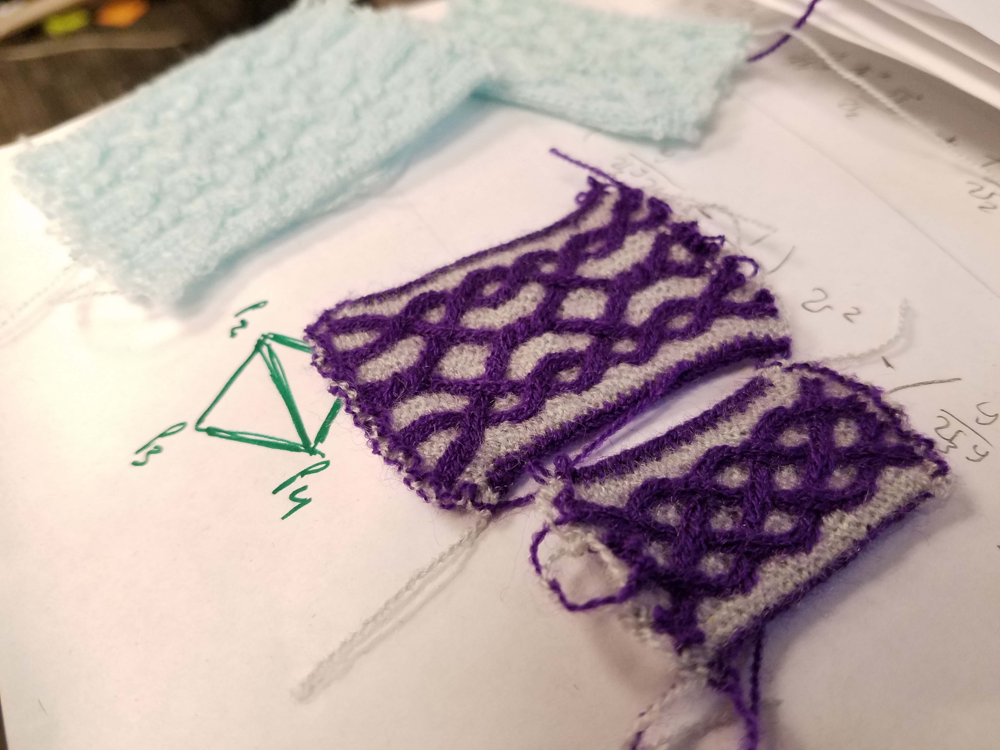
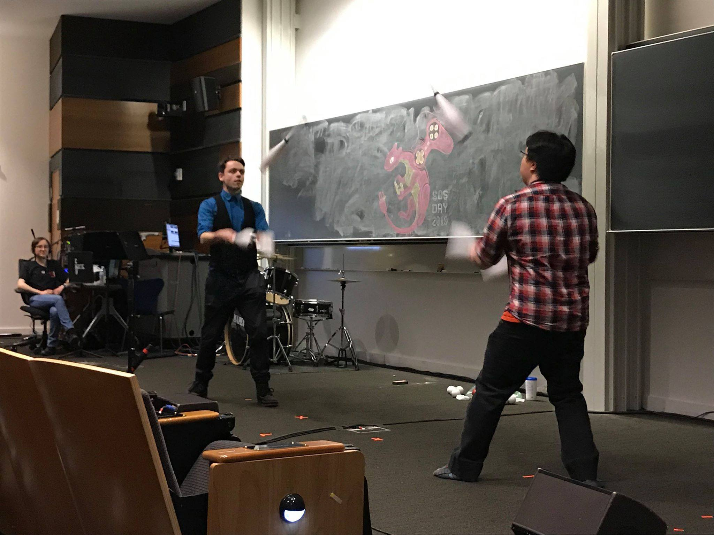

Hobbies
Origami
I enjoy folding origami and designing origami models. You can find some of my designs here.

Knitting
Recently, I've been exploring computer controlled knitting with Carnegie Mellon's textiles lab. You can find my code on GitHub. I also knit and crochet by hand. You can see pictures of my projects, both hand made and machine made, on my Ravelry page here.

Cooking
I like cooking, but I don't like scrolling through tons of flavortext to get to recipes on the internet. Also, I always forget my favorite modifications to recipes. So I've collected some of my favorite recipes here.
Juggling
I've been juggling for several years. This photo is from a performance I did with Dan Anderson at CMU's SCS day talent show. I also spin poi and contact juggle.
